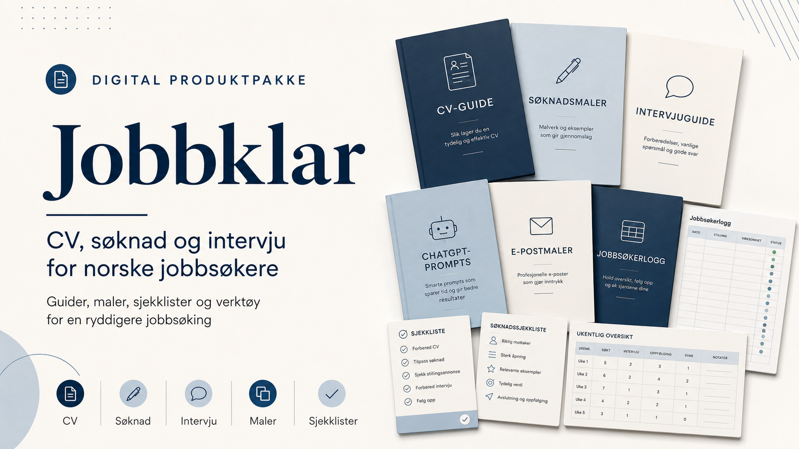
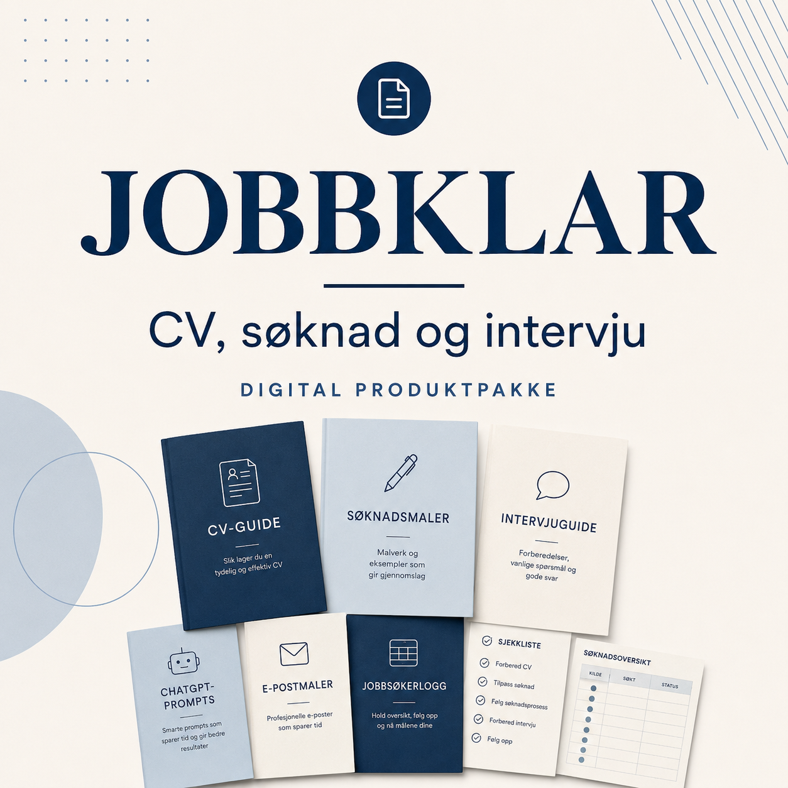

Usikker på CV-mal
CV-guiden og de fire malene hjelper deg å velge en ryddig form som passer erfaringen din.
Digital produktpakke for norske jobbsøkere
Samle jobbsøkingen på ett sted med norske guider, konkrete eksempler, redigerbare maler, sjekklister og praktiske verktøy for hele prosessen fra første CV-utkast til oppfølging etter intervju.
Digital levering via Gumroad. PDF, Word, Excel og tekstfiler.

Problem og løsning
Jobbklar er laget for situasjonene der du vet at du må søke, men ikke helt vet hvor du skal begynne eller hva du bør skrive.
CV-guiden og de fire malene hjelper deg å velge en ryddig form som passer erfaringen din.
Søknadsguiden viser hvordan du kobler motivasjon, erfaring og stillingsannonse mer konkret.
Bonusguiden hjelper deg å oversette skole, småjobber, prosjekter og frivillig innsats til relevante punkter.
Intervjuguide, eksempelsvar og arbeidsark gjør det lettere å forberede egne svar uten å pugge ordrett.
Jobbsøkerloggen samler frister, status, intervjuer og oppfølging i én Excel-fil.
AI-guiden og promptbanken viser trygg bruk til struktur, forbedring og kontroll uten å finne på erfaring.
Dette får du

Startguiden og 7-dagers hurtigplanen hjelper deg å få oversikt og velge en enkel rekkefølge for arbeidet.
Guidene viser hva en norsk CV bør inneholde, mens malene gir redigerbare utgangspunkt.
Få hjelp til å skrive mer konkret, velge relevant erfaring og tilpasse teksten til stillingsannonsen.
Bruk AI som skrivehjelp uten å sende ukritisk, kunstig eller feilaktig tekst.
Forbered egne eksempler, vanlige spørsmål og oppfølgingspunkter på en rolig og praktisk måte.
Lag bedre oppfølging før og etter søknad, og hold orden på prosessen.
Erfaringsoversetteren hjelper deg å finne relevant erfaring i skole, fritid, småjobber og frivillig arbeid.
Se pris, betalingsvalg og levering direkte hos Gumroad.
Hvem pakken passer for
Pakken kan brukes av andre jobbsøkere, men eksemplene og malene er særlig utviklet for unge søkere og personer tidlig i arbeidslivet.
Få hjelp til å koble skole, tilgjengelighet og serviceerfaring til stillingen.
Vis fram utdanning, praksis, prosjekter og motivasjon uten store ord.
Finn erfaring fra ansvar, samarbeid, skolearbeid og fritidsaktiviteter når det er relevant.
Bygg CV og søknad rundt det du faktisk har gjort, og skriv ærlig om nivået ditt.
Tilpass dokumentene til læringsevne, faglig retning og konkrete eksempler.
Bruk sjekklister og logg for å holde oversikt over søknader, frister og oppfølging.
Slik bruker du pakken
Alle filene leveres digitalt etter kjøp.
Hvorfor Jobbklar
Jobbklar er ikke bygget rundt store løfter. Målet er å gjøre jobbsøkingen mer oversiktlig, hjelpe deg å skrive mer konkret og gi deg redigerbare utgangspunkt som må tilpasses hver stilling.
Pakken legger vekt på naturlig norsk språk, egne erfaringer fremfor tomme egenskaper, og kontroll før sending.
Word-filene kan redigeres i Microsoft Word og fungerer vanligvis også i Google Docs. Enkelte sideskift eller skrifter kan se litt annerledes ut mellom programmer.
Vanlige spørsmål
Jobbklar passer særlig for studenter, elever, nyutdannede og personer med lite arbeidserfaring som søker deltidsjobb, sommerjobb, første fulltidsjobb, internship, trainee-stilling eller juniorrolle.
Ja. Flere av filene viser hvordan skole, praksis, frivillig arbeid, småjobber, prosjekter og relevant fritid kan beskrives ærlig og konkret.
Ja. CV-maler, søknadsmaler, e-postmaler og intervjuarbeidsark leveres som redigerbare Word-filer der det passer.
De fungerer vanligvis i Google Docs, men enkelte sideskift eller skrifter kan se litt annerledes ut mellom programmer.
Kjøp og digital levering håndteres av Gumroad. Etter kjøp får du tilgang til nedlastingen via Gumroad.
Nei. Jobbklar er en digital produktpakke, ikke et abonnement.
Nei. Du kan starte med CV, søknad eller intervju, og bruke resten når det blir relevant.
Du bør ikke sende ukritisk AI-tekst. Bruk heller ChatGPT til struktur, forslag og forbedring, og kontroller at teksten stemmer med din faktiske erfaring.
Nei. Ingen malpakke kan garantere intervju eller jobb. Jobbklar hjelper deg å gjøre dokumentene mer konkrete og kontrollere dem før sending.
Originalfilene er for personlig bruk. De kan ikke videreselges, deles offentlig eller legges ut som egne maler.
Sjekk kjøpskvitteringen og nedlastingssiden hos Gumroad. Kjøp og teknisk levering håndteres av Gumroad.
Klar til å rydde jobbsøkingen?
Få norske guider, redigerbare maler, sjekklister, intervjuhjelp og jobbsøkerlogg samlet i én digital produktpakke.
Se pris og kjøp på GumroadDigital levering etter kjøp.